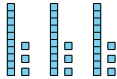
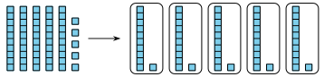
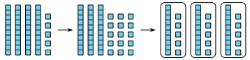
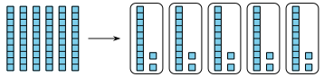
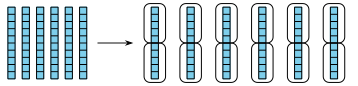

El propósito de esta lección es que los estudiantes reconozcan que las dos interpretaciones de la división siguen siendo válidas al dividir números más grandes y que utilicen diagramas en base diez para interpretar y representar la división hasta \(100\text{.}\)
Materiales.
Actividad 1
Bloques en base diez
Actividad 2
Bloques en base diez
Narrativa de la lección.
Antes de esta lección, los estudiantes han interpretado y representado la división en términos de hacer grupos de igual tamaño. En esta lección, repasan las dos interpretaciones de la división y recuerdan que el divisor se puede ver como el número de grupos o el tamaño de cada grupo.
Los estudiantes utilizan bloques en base diez y diagramas para analizar y representar expresiones de división como \(55 \div 5\) y \(84 \div 7\text{.}\) Ellos ven que, dependiendo de los números involucrados, una interpretación de la división puede ser más útil que la otra.
Los estudiantes también reconocen que es útil usar decenas y unidades para hacer grupos iguales (por ejemplo, pensar en \(84\) como \(8\) decenas y \(4\) unidades, en lugar de \(84\) unidades), y descomponer las decenas en unidades según sea necesario.
Preguntas de reflexión.
¿Cómo está ayudando el conocimiento de los estudiantes sobre el valor posicional y las propiedades de las operaciones a que comprendan las estrategias de división?
SubsubsecciónCalentamiento (10 mins)
Tiempo recomendado.
10 minutos
Narrativa.
El propósito de este Verdadero o Falso es reforzar la relación entre decenas y unidades (que \(1\) decena es igual a \(10\) unidades, o \(1\) grupo de \(10\) es igual a \(10\) grupos de \(1\)). Esto será útil cuando los estudiantes utilicen bloques en base diez para representar la división y descompongan las decenas en unidades para facilitar el proceso de dividir. También permite a los estudiantes practicar encontrar el producto de un número entero de un solo dígito y un múltiplo de \(10\text{.}\)
Lanzamiento.
Muestre una de las afirmaciones (igualdades).
“Hagan una señal cuando sepan si la afirmación es verdadera o no, y puedan explicar cómo lo saben.”
1 minuto: tiempo para pensar en silencio.
Desarrollo de la actividad.
Comparta y registre respuestas y estrategias.
Repita con cada afirmación.
Calentamiento77.Verdadero o falso: Unidades, decenas, veintenas.
En cada caso, decide si la afirmación es verdadera o falsa. Prepárate para explicar tu razonamiento.
Verdadero: \(4\) decenas son \(40\) unidades. Ambos lados son iguales a \(40\text{.}\)
Verdadero: \(2 \times 10\) es \(20\text{,}\) por eso ambos lados muestran \(4\) grupos de \(20\text{.}\)
Falso: En la izquierda hay \(8\) grupos de \(20\text{.}\) En la derecha hay \(8\) grupos de \(2\text{,}\) ya que \(2 \times 1\) es \(2\text{.}\)
Verdadero: \(20\) es \(2 \times 10\text{,}\) por eso \(8 \times 20\) es lo mismo que \(8 \times 2 \times 10\text{,}\) que es \(16 \times 10\text{.}\)
Síntesis de la actividad.
“¿Cómo pueden justificar su respuesta sin encontrar el valor de ambos lados?”
Considere preguntar:
“¿Alguien puede expresar el razonamiento de de otra forma?”
“¿Alguien quiere agregar algo al razonamiento de ?”
SubsubsecciónActividad 1 (20 mins)
Tiempo recomendado.
20 minutos
Narrativa.
El propósito de esta actividad es que los estudiantes utilicen estrategias basadas en el valor posicional para encontrar cocientes mayores que \(10\text{.}\) Los estudiantes utilizan bloques en base diez para representar cocientes con divisores de un solo dígito, para los cuales es natural pensar en el divisor como el número de grupos. En una actividad posterior, se les recordará a los estudiantes que el divisor también puede interpretarse como el tamaño de cada grupo.
Trabajar con bloques en base diez incentiva a los estudiantes a dividir las decenas y luego las unidades, y a ver que a veces es necesario descomponer una o más decenas para terminar de poner el dividendo en grupos iguales. Cuando los estudiantes representan un cociente utilizando bloques en base diez, razonan de manera abstracta y cuantitativa (MP2).
Materiales.
Bloques en base diez
Lanzamiento.
Grupos de 2.
Entrega a cada grupo bloques en base diez.
“Usen bloques en base diez para representar \(39 \div 3\text{.}\)”
1–2 minutos: tiempo de trabajo independiente.
Seleccione a un estudiante que dividió los bloques en \(3\) grupos de \(13\) para compartir su representación final, por ejemplo:

“¿Por qué hay \(3\) grupos?”
“¿Cómo se pudieron haber dividido los bloques para que terminaran de esta forma?” (Las decenas se colocaron en \(3\) grupos y luego las unidades se colocaron una por una en \(3\) grupos hasta que no quedó ninguna.)
Destaque que también se podrían haber dividido las decenas y luego las unidades.
Desarrollo de la actividad.
“Trabajen con su compañero en el primer problema.”
5 minutos: tiempo de trabajo en pareja.
Haga una pausa para tener una discusión.
“¿En qué fue diferente usar los bloques para encontrar \(45 \div 3\) a usarlos para encontrar \(55 \div 5\text{?}\)” (Para \(45 \div 3\text{,}\) fue necesario descomponer \(1\) decena para terminar de colocar \(45\) en \(3\) grupos iguales. Eso no fue necesario para \(55 \div 5\) porque ya había la cantidad correcta de decenas y unidades para hacer los \(5\) grupos.)
“Ahora, individualmente, encuentren el valor de los cocientes del segundo problema.”
6 a 8 minutos: tiempo de trabajo independiente.
Actividad78.Dividamos con bloques en base diez.
Usa bloques en base diez para representar cada expresión. Después, encuentra su valor.
\(\displaystyle 55 \div 5\)
\(\displaystyle 45 \div 3\)
Encuentra el valor de cada expresión. Usa bloques en base diez si crees que te pueden ayudar.
\(\displaystyle 63 \div 3\)
\(\displaystyle 84 \div 7\)
\(\displaystyle 100 \div 5\)
Solución.
\(\displaystyle 11\)

\(\displaystyle 15\)

\(21\) (\(3\) grupos de \(21\) unidades, o \(3\) grupos de \(2\) decenas y \(1\) unidad)
\(12\) (\(7\) grupos de \(12\text{,}\) o \(7\) grupos de \(1\) decena y \(2\) unidades)
\(20\) (\(5\) grupos de \(20\) unidades, o \(5\) grupos de \(2\) decenas)
Síntesis de la actividad.
Invite a los estudiantes a compartir sus respuestas y razonamientos para el último grupo de cocientes.
Pregunte a los estudiantes que utilizaron bloques en base diez o dibujaron diagramas: “¿Fue necesario descomponer alguna decena en unidades para dividir?” (No fue necesario para \(63 \div 3\) porque ya había la cantidad correcta de decenas y unidades para colocar en \(3\) grupos. No fue necesario para \(100 \div 5\) porque comencé con \(10\) decenas y ya había la cantidad correcta de decenas para hacer \(5\) grupos.)
“¿Por qué fue necesario o útil descomponer las decenas de \(84\text{?}\)” (Después de colocar \(7\) decenas en \(7\) grupos, todavía queda \(1\) decena y \(4\) unidades. \(1\) decena no se pudo dividir en \(7\) grupos.)
Desarrollo de lenguaje matemático.
Apoyos para la discusión de MLR8:
Síntesis: Algunos estudiantes pueden beneficiarse de la oportunidad de ensayar lo que dirán con un compañero antes de compartirlo con toda la clase.
Avances: Habla.
Acceso a estudiantes con discapacidades.
Representación: Interiorizar la comprensión.
Síntesis: Invite a los estudiantes a identificar qué detalles fueron más importantes al decidir cómo dividir los bloques. Muestre el esquema de oración: “La próxima vez que use bloques en base diez para dividir, buscaré / prestaré atención a”.
Apoya la accesibilidad para: Funcionamiento Social-Emocional.
SubsubsecciónActividad 2 (15 mins)
Tiempo recomendado.
15 minutos
Narrativa.
El propósito de esta actividad es mostrar que los dos significados de la división siguen siendo válidos al dividir números más grandes y que, en algunos casos, una interpretación puede ser más útil que la otra.
Los estudiantes primero analizan dos formas de usar bloques en base diez para representar \(60 \div 5\) y ven que el divisor, \(5\text{,}\) puede interpretarse como el número de grupos o el tamaño de un grupo. Luego consideran cómo podrían interpretar y representar el divisor en otros cocientes. El razonamiento aquí prepara a los estudiantes para pensar de manera más estratégica a medida que dividen números más grandes.
Materiales.
Bloques en base diez
Lanzamiento.
Grupos de 2 a 4.
Entregue bloques en base diez a cada grupo.
Pida a los estudiantes que mantengan sus libros cerrados.
“Usen bloques en base diez para encontrar el valor de \(60 \div 5\text{.}\)”
1-2 minutos: tiempo de trabajo independiente.
Desarrollo de la actividad.
“Ahora observen el trabajo de Jada y de Han en la actividad. ¿Quién de ellos representó la división de la misma forma en que ustedes lo hicieron?”
“Con su compañero, denle sentido al trabajo de Jada y de Han, y completen el primer problema.”
Pausa para una breve discusión.
“¿En qué son diferentes las representaciones de Jada y de Han? ¿Cómo interpretó cada uno \(60 \div 5\text{?}\)” (Jada vio el \(5\) como el número de grupos. Han vio el \(5\) como el número en cada grupo.)
Haga una encuesta en la clase sobre cómo interpretaron \(60 \div 5\) cuando lo representaron en la actividad de calentamiento.
“Ahora trabajen individualmente en el segundo grupo de problemas.”
5 minutos: tiempo de trabajo independiente.
Actividad79.Diferentes formas de mostrar la división.
Jada y Han usaron bloques en base diez para representar \(60 \div 5\text{.}\)
Este es el trabajo de Jada:

Este es el trabajo de Han:

Dale sentido al trabajo de Jada y de Han.
¿Cómo se diferencia lo que hicieron?
¿En qué parte del trabajo de cada uno vemos el valor de \(60 \div 5\text{?}\)
¿Cómo usarías bloques en base diez para poder representar estas expresiones y encontrar su valor? Prepárate para explicar tu razonamiento.
\(64 \div 4:\) ¿Harías \(4\) grupos o grupos de \(4\text{?}\)
\(72 \div 6:\) ¿Harías \(6\) grupos o grupos de \(6\text{?}\)
\(75 \div 15:\) ¿Harías \(15\) grupos o grupos de \(15\text{?}\)
Solución.
Ejemplo de respuesta:
Jada hizo \(5\) grupos y puso \(1\) decena en cada uno. Descompuso la última decena en \(10\) unidades y puso \(2\) unidades en cada grupo. Han dividió cada decena en \(2\) grupos con \(5\) unidades en cada uno.
En el trabajo de Jada, es el número en cada grupo, que es \(12\text{.}\) En el trabajo de Han, es el número de grupos, que es \(12\text{.}\)
Ejemplo de respuesta:
\(4\) grupos, porque es más rápido que hacer grupos de \(4\) y contar los grupos.
\(6\) grupos, ya que no requiere descomponer las \(7\) decenas en unidades.
Grupos de \(15\text{,}\) porque es más rápido hacer grupos de \(1\) decena y \(5\) unidades, que hacer \(15\) grupos y averiguar cuántos poner en cada grupo.
Síntesis de la actividad.
Invite a los estudiantes a compartir sus respuestas y razonamiento para el último grupo de problemas.
“¿Cómo decidieron si el divisor, o sea el número entre el cual estamos dividiendo, es el número de grupos o la cantidad en cada grupo?” (Depende del número. En los dos primeros problemas, el divisor era \(4\) y \(6\text{,}\) por lo que era más fácil pensar en \(4\) grupos y \(6\) grupos. En el último problema, el divisor era \(15\text{.}\) Era más fácil pensar en cuántos grupos de \(15\) hay en \(75\) que en hacer \(15\) grupos a partir de \(75\text{.}\))
SubsubsecciónSíntesis de la lección (10 mins)
Hoy recordamos que el divisor de una expresión de división se puede ver como el número de grupos o el tamaño de cada grupo
Muestre: \(96 \div 8\)
“Si representaran este cociente con bloques en base diez, ¿pondrían \(9\) decenas y \(6\) unidades en \(8\) grupos, o las pondrían en grupos de \(8\text{?}\)” (Los pondría en \(8\) grupos. Ocho de las decenas se pueden poner fácilmente en \(8\) grupos. La decena que sobra y \(6\) unidades forman \(16\) unidades, así que \(2\) unidades van en cada grupo. Los pondría en grupos de \(8\text{.}\) Sé que \(10\) grupos de \(8\) son \(80\text{,}\) así que eso se encarga de las \(8\) decenas. La decena que sobra y \(6\) unidades hacen \(16\text{,}\) que son \(2\) grupos de \(8\text{.}\))
Preguntas de comprensiónActividad de cierre (5 mins)
Encuentra el valor de \(51 \div 3.\) Usa bloques en base diez si crees que te pueden ayudar. Explica o muestra cómo razonaste.
Solución.
\(17\text{.}\) Ejemplo de respuesta: los estudiantes forman \(51\) con bloques en base diez y hacen \(3\) grupos iguales, descomponiendo decenas según sea necesario. Los estudiantes hacen un dibujo que muestra \(51\) en \(3\) grupos o un dibujo que muestra \(51\) en grupos de \(3\text{.}\)
Posibles errores.
Los estudiantes no encuentran el cociente de \(51 \div 3\text{.}\)
Acciones para apoyar el aprendizaje.
Durante la introducción de la actividad del día siguiente, destaque las ideas importantes de la lección anterior.